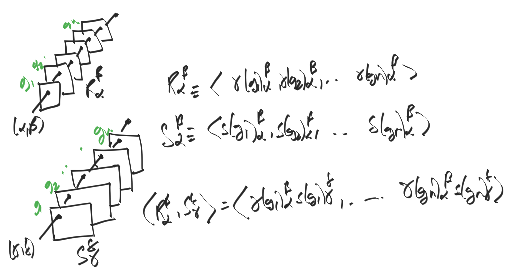

is given by η:V→W if the natural diagram commutes:
V --f--→ V
| |
η η
↓ ↓
W --f'-→ W
such a map η is called called as an intertwining map or an equivariant map.
§ Schur's lemma
The only equivariant maps between irreducible representations is either the
zero map or a scalar multiple of the identity map. This is stronger than
saying that the equivariant map is a diagonal matrix; scalar multiple of
identity implies that all dimensions are scaled uniformly.
The main idea of the proof is to show that the kernel and image of the
intertwining map is an irreducible subspace of f,f′ retrospectively. Since
the maps are irreducible, we must have the the intertwining is either the zero
map, or a map into the full group (TODO). This forces the map to be zero or a scalar
multiple of the identity.
One way to look at this is that for irreps f:G→V and
f′:G→W, the dimension of Hom(V,W) is either 0 or 1 (scalings of identity).
§ Schur orthogonality

We consider representations "one matrix index" at a time, and show that
the matrix entries of irreducible representations is going to be orthogonal.
The proof is to consider representations f:G→GL(n,C),
f′:G→GL(m,C). For a fixed row/column pair (r,c),
we consider the inner product ∑g∈Gf(g)[r][c]f′(g)[r][c] (TODO)
§ Inner product of class functions
we impose an inner product relation on the space of class functions (complex valued functions
constant on conjugacy classes) G→C×, given by
⟨f∣f′⟩≡1/∣G∣∑g∈Gf(g)f′(g)
where f′(g) is the complex conjugate.
Using the Schur orthogonality relations, we immediately deduce that the inner product
of two irreducible characters can be viewed as the schur orthogonality applied to their
(only) matrix entry at location (1, 1). Thus, irreducible characters will be orthogonal,
and equal characters will have inner product 1.
§ Regular representation
The "Cayley-style" representation one would naturally dream up. For a group G,
build a vector space V whose basis is given by elements of G. Have g∈G
act on V by seding vh to vgh. Ie, act with g as a permutation on V.
This gives us a "large" representation. For example, the permutation group of n
letters will have a regular representation of n! basis vectors.
This representation contains every irrep. The idea is to show that the dot
product of the trace of the regular representation with every other irrep is
nonzero. Furthermore, since the regular representation has finite dimension,
this tells us that there are only finitely many irreps: the irreps correspond
to subrepresentations, and a finite representation only has finitely many
subrepresentations. This makes the idea of classifying irreps a reasonable task.
§ Abelian groups are controlled by characters
Since abelian groups map to automorphism that all commute with each other, we can
simultaneously diagonalize these matrices. Thus, we only need to consider
the data along each diagonal, which is independent. This reduces the representation
to a direct sum of scalars / 1D representations / characters.